II Arbitrarily Large Data
9 Lists
Structures are useful when you know exactly how many pieces of information you wish to represent as a single piece of data. Even if you create deeply nested structures according to the data definitions of Fixed-Size Data, you always know exactly how many atomic pieces of data it contains. Many programming problems, though, deal with an undetermined number of pieces of information that must be processed as one piece of data. For example, an advanced thermostat may record a series of temperature recordings and your program may have to compute some form of average. Or, you may wish to allow the player in the space invader game to fire many shots, in which case the world state must keep track of all of these shots. With what you know, however, it is impossible to formulate a data definition that can represent this kind of state of the world.
To tackle problems that require representations of arbitrarily large but
still finite pieces of information, we need a new way to formulate data
definitions. In this chapter, we introduce these self-referential data
definitions and one important example—
9.1 Creating Lists
All of us make lists all the time. Before we go grocery shopping, we write down a list of items we wish to purchase. Some people write down a to-do list every morning. During December, many children prepare Christmas wish lists. To plan a party, we make a list of invitees. Arranging information in the form of lists is a ubiquitous part of our life.
Given that information comes in the shape of lists, we must clearly learn how to represent such lists as BSL data. Indeed, because lists are so important BSL comes with built-in support for creating and manipulating lists, similar to the support for Cartesian points (posn). In contrast to points, the data definition for lists is always left to you. But first things first. We start with the creation of lists.
(cons "Mercury" empty) 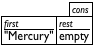
(cons "Venus" (cons "Mercury" empty)) 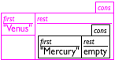
(cons "Earth" (cons "Venus" (cons "Mercury" empty))) 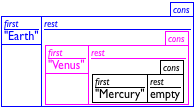
(cons "Earth" (cons "Venus" (cons "Mercury" empty))) 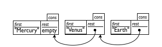
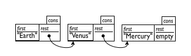
Because even good artists would have problems with drawing deeply nested structures, computer scientists resort to box-and-arrow diagrams instead. Figure 32 illustrates how to re-arrange the last row of figure 31. Each cons structure becomes a separate box. If the rest field is too complex to be drawn inside of the box, we draw a bullet instead and a line with an arrow to the box that it contains. Depending on how the boxes are arranged you get two kinds of diagrams. The first, displayed in the top row of figure 32, lists the boxes in the order in which they are created. The second, displayed in the bottom row, lists the boxes in the order in which they are consed together. Hence the second diagram immediately tells you what first would produced when applied to the list, no matter how long the list is. For this reason, people tend to prefer the second arrangement.
a list of celestial bodies, say, at least all the planets in our solar system;
a list of items for a meal, for example, steak, French fries, beans, bread, water, brie cheese, and ice cream; and
a list of colors.

; A 3LON is (cons Number (cons Number (cons Number empty))) ; interp. (cons 1 (cons -1 (cons -2 empty))) represents a point ; in a three-dimensional space
; A List-of-names is one of: ; – empty ; – (cons String List-of-names) ; interp. a List-of-names represents a list of invitees by last name
Exercise 119. Create an element of List-of-names that contains five Strings. Sketch a box representation of the list similar to those found in figure 31.
Explain why
Now that we know why our first self-referential data definition makes sense, let us take another look at the definition itself. Looking back we see that all the original examples in this section fall into one of two categories: start with an empty list or use cons to add something to an existing list. The trick then is to say what kind of “existing lists” you wish to allow, and a self-referential definition ensures that you are not restricted to lists of some fixed length.
Exercise 120. Provide a data definition for representing lists of Boolean values. The class contains all arbitrarily long lists of Booleans.
9.2 What Is empty, What Is cons
Let us step back for a moment and take a close look at empty and cons. As mentioned, empty is just a constant. When compared to constants such as 5 or "this is a string", it looks more like a function name or a variable; but when compared with true and false, it should be easy to see that it really is just BSL’s representation for empty lists.
> (empty? empty) true
> (empty? 5) false
> (empty? "hello world") false
> (empty? (cons 1 empty)) false
> (empty? (make-posn 0 0)) false
(define-struct combination (left right)) ; A ConsCombination is (make-combination Any Any). ; Any Any -> ConsCombination (define (our-cons a-value a-list) (make-combination a-value a-list))
> (cons 1 2) cons: second argument must be a list, but received 1 and 2
; A ConsOrEmpty is one of: ; – empty ; – (cons Any ConsOrEmpty) ; interp. ConsOrEmpty is the class of all BSL lists ; Any ConsOrEmpty -> ConsOrEmpty (define (our-cons a-value a-list) (cond [(empty? a-list) (make-combination a-value a-list)] [(our-cons? a-list) (make-combination a-value a-list)] [else (error "cons: list as second argument expected")]))
; ConsOrEmpty -> Any ; extract the left part of the given combination (define (our-first a-combination) (combination-left a-combination)) ; ConsOrEmpty -> Any ; extract the right part of the given combination (define (our-rest a-combination) (combination-right a-combination)) ; Any -> Boolean ; is the given value an instance of the combination structure? (define (our-cons? x) (combination? x))
If the structure type definition for combination were available, it would be easy to create combinations that don’t contain empty or another combination in the right field. Whether such bad instances are created intentionally or accidentally, they tend to break functions and programs in strange ways. So the actual structure type definition underlying cons remains hidden to avoid problems. Local Function Definitions demonstrates how you can hide definitions, too, but for now, you don’t need this power.
--- a special value, mostly to represent the empty list
--- a predicate to recognize empty and nothing else
--- a checked constructor to create two-field instances
--- the selector to extract the last item added
--- the selector to extract the extended list
--- a predicate to recognizes instances of cons
Figure 33 summarizes all this. The key insight is that cons is a checked constructor and that first, rest, and cons? are merely distinct names for the usual predicate and selectors. What this chapter teaches then is not a new way of creating data but a new way of formulating data definitions.
9.3 Programming With Lists
Sample Problem: You are working on the contact list for some new cell phone. The phone’s owner updates—
adds and deletes names— and consults this list— looks for specific names— on various occasions. For now, you are assigned the task of designing a function that consumes this list of contacts and determines whether it contains the name “Flatt.”
; List-of-names -> Boolean ; to determine whether "Flatt" occurs on a-list-of-names (define (contains-flatt? a-list-of-names) false)
(check-expect (contains-flatt? empty) false)
(check-expect (contains-flatt? (cons "Findler" empty)) false) (check-expect (contains-flatt? (cons "Flatt" empty)) true)
(check-expect (contains-flatt? (cons "Mur" (cons "Fish" (cons "Find" empty)))) false) (check-expect (contains-flatt? (cons "A" (cons "Flatt" (cons "C" empty)))) true)
Take a breath. Run the program. The header is a “dummy” definition for the function; you have some examples; they have been turned into tests; and best of all, some of them actually succeed. They succeed for the wrong reason but succeed they do. If things make sense now, read on.
(define (contains-flatt? a-list-of-names) (cond [(empty? a-list-of-names) ...] [(cons? a-list-of-names) ...]))
(define (contains-flatt? a-list-of-names) (cond [(empty? a-list-of-names) ...] [(cons? a-list-of-names) (... (first a-list-of-names) ... (rest a-list-of-names) ...)]))
(define (contains-flatt? a-list-of-names) (cond [(empty? a-list-of-names) false] [(cons? a-list-of-names) (... (string=? (first a-list-of-names) "Flatt") ... ... (rest a-list-of-names) ...)]))
Fortunately, we have just such a function: contains-flatt?, which according to its purpose statement determines whether a list contains "Flatt". The purpose statement implies that if l is a list of strings, (contains-flatt? l) tells us whether l contains the string "Flatt". Similarly, (contains-flatt? (rest l)) determines whether the rest of l contains "Flatt". And in the same vein, (contains-flatt? (rest a-list-of-names)) determines whether or not "Flatt" is in (rest a-list-of-names), which is precisely what we need to know now.
; List-of-names -> Boolean (define (contains-flatt? a-list-of-names) (cond [(empty? a-list-of-names) false] [(cons? a-list-of-names) (... (string=? (first a-list-of-names) "Flatt") ... ... (contains-flatt? (rest a-list-of-names)) ...)]))
; List-of-names -> Boolean ; to determine whether "Flatt" occurs on a-list-of-names (check-expect (contains-flatt? (cons "Mur" (cons "Fish" (cons "Find" empty)))) false) (check-expect (contains-flatt? (cons "A" (cons "Flatt" (cons "C" empty)))) true) (define (contains-flatt? a-list-of-names) (cond [(empty? a-list-of-names) false] [(cons? a-list-of-names) (or (string=? (first a-list-of-names) "Flatt") (contains-flatt? (rest a-list-of-names)))]))
Here then is the complete definition: figure 34. Overall it doesn’t look too different from the definitions in the first chapter of the book. It consists of a signature, a purpose statement, two examples, and a definition. The only way in which this function definition differs from anything you have seen before is the self-reference, that is, the reference to contains-flatt? in the body of the define. Then again, the data definition is self-referential, too, so in some sense this second self-reference shouldn’t be too surprising.
(cons "Fagan" (cons "Findler" (cons "Fisler" (cons "Flanagan" (cons "Flatt" (cons "Felleisen" (cons "Friedman" empty))))))) What answer do you expect?
Exercise 123. Develop the function contains?, which determines whether some given string occurs on a list of strings.
10 Designing With Self-Referential Data Definitions
At first glance, self-referential data definitions seem to be far more complex than those for compound or mixed data. But, as the example of contains-flatt? shows, the six steps of the design recipe still work. Nevertheless, in this section we discuss a new design recipe that works better for self-referential data definitions. As implied by the preceding section, the new recipe generalizes those for compound and mixed data. The new parts concern the process of discovering when a self-referential data definition is needed, deriving a template, and defining the function body:
If a problem statement discusses compound information of arbitrary size, you need a self-referential data definition. At this point, you have seen only one such class, List-of-names, but it is easy to see that it defines the collection of lists of strings, and it is also easy to imagine lists of numbers, etc.
Numbers also seem to be arbitrarily large. For inexact numbers, this is an illusion. For precise integers, this is indeed the case. Dealing with integers is therefore a part of this chapter.
For a self-referential data definition to be valid, it must satisfy two conditions. First, it must contain at least two clauses. Second, at least one of the clauses must not refer back to the class of data that is being defined. It is therefore good practice to identify the self-references explicitly with arrows from the references in the data definition back to its beginning.
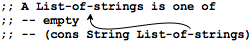
You can, and should, also check the validity of self-referential data definitions with the creation of examples. If it is impossible to generate examples from the data definition, it is invalid. If you can generate examples but you can’t see how to generate larger and larger examples, the definition may not live up to its interpretation.
Nothing changes about the header material. You still need a signature, a purpose statement, and a dummy definition. When you do formulate the purpose statement, it is as important as always to keep in mind that it should specify what the function computes not how it goes about it, especially not how it goes through instances of the given data.
Be sure to work through input examples that use the self-referential clause of the data definition several times. It is the best way to formulate tests that cover the entire function definition later.
At the core, a self-referential data definition looks like a data definition for mixed data. The development of the template can therefore proceed according to the recipe in Itemizations and Structures. Specifically, we formulate a cond expression with as many cond clauses as there are clauses in the data definition, match each recognizing condition to the corresponding clause in the data definition, and write down appropriate selector expressions in all cond lines that process compound values.
Does the data definition distinguish among different subclasses of data?
Your template needs as many cond clauses as subclasses that the data definition distinguishes.
How do the subclasses differ from each other?
Use the differences to formulate a condition per clause.
Do any of the clauses deal with structured values?
If so, add appropriate selector expressions to the clause.
Does the data definition use self-references?
Formulate ``natural recursions'' for the template to represent the self-references of the data definition.
Some data definitions refer to others. For those, use this advice:
Does the data definition refer to another data definition?
Contemplate the development of a separate template. See Structures In Lists.
Figure 36: How to translate a data definition into a template
Figure 36 expresses this idea as a “question and answer” game. In the left column it states questions you need to ask about the data definition for the argument, and in the right column it explains what the answer means for the construction of the template. If you ignore the last row and apply the first three questions to any function that consumes a List-of-strings, you arrive at this shape:(define (fun-for-los alos) (cond [(empty? alos) ...] [else (... (first alos) ... (rest alos) ...)])) Recall, though, that the purpose of a template is to express the data definition as a program layout. That is, a template expresses as code what the data definition for the input expresses as a mix of English and BSL. Hence all important pieces of the data definition must find a counterpart in the template, and this guideline should also hold when a data definition is self-referential. In particular, when a data definition is self-referential in the ith clause and the kth field of the structure mentioned there, the template should be self-referential in the ith cond clause and the selector expression for the kth field. For each such selector expression, add an arrow back to the function parameter. At the end, your template must have as many arrows as we have in the data definition.
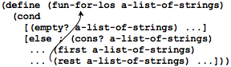
Since programming languages are text-oriented, you must learn to use an alternative to arrows, namely, self-applications of the function to the selector expression(s):(define (fun-for-los alos) (cond [(empty? alos) ...] [else (... (first alos) ... ... (fun-for-los (rest alos)) ...)])) We refer to a self-use of a function as recursion and in the context of a template as a natural recursion. The last row in figure 36 addresses the issue of “arrows” in data definitions; some of the following chapters will expand on this idea.For the design of the body we start with those cond lines that do not contain natural recursions. They are called base cases.The corresponding answers are typically easy to formulate or are already given by the examples.
Then we deal with the self-referential cases. We start by reminding ourselves what each of the expressions in the template line computes. For the natural recursion we assume that the function already works as specified in our purpose statement. The rest is then a matter of combining the various values.
What are the answers for the non-recursive cond clauses?
The examples should tell you which values you need here. If not, formulate appropriate examples and tests.
What do the selector expressions in the recursive clauses compute?
The data definitions tell you what kind of data these expressions extract and the interpretations of the data definitions tell you what this data represents.
What do the natural recursions compute?
Use the purpose statement of the function to determine what the value of the recursion means not how it computes this answer. If the purpose statement doesn't tell you the answer, improve the purpose statement.
How can you combine these values into the desired answer?
If you are stuck here, arrange the examples from the third step in a table. Place the given input in the first column and the desired output in the last column. In the intermediate columns enter the values of the selector expressions and the natural recursion(s). Add examples until you see a pattern emerge that suggests a ``combinator'' function.
Figure 38: How to turn the template into a function definition
Figure 38 formulates questions and answers for this step. Let us use them for the definition of how-many, a function that determines how many strings are on a list of strings. Assuming we have followed the design recipe, we have the following:
; List-of-strings -> Number ; to determine how many strings are on alos (define (how-many alos) (cond [(empty? alos) ...] [else (... (first alos) ... (how-many (rest alos)) ...)])) The answer for the base case is 0 because the empty list contains nothing. The two expressions in the second clause compute the first item and the number of strings on the (rest alos). To compute how many strings there are on all of alos, we just need to add 1 to the value of the latter expression:This example illustrates that not all selector expressions in the template are necessarily relevant for the function definition. In contrast, for the motivating example of the preceding section—contains-flatt?— we use both expressions from the template. In many cases, the combination step can be expressed with BSL’s primitives, for example, +, and, or cons; in some cases, though, you may have to make wishes. See wish lists in Fixed-Size Data. Finally, keep in mind that for some functions, you may need nested conditions.
Last but not least, make sure all the examples are turned into tests, that the tests are run, and that running them covers all the pieces of the function.
Figure 39 summarizes the design recipe of this section in a tabular format. The first column names the steps of the design recipe, the second the expected results of each step. In the third column, we describe the activities that get you there. The figure is tailored to the kind of self-referential list definitions we use in this chapter. As always, practice helps you master the process, so we strongly recommend that you tackle the following exercises, which ask you to apply the recipe to several kinds of examples.
You may want to copy figure 39 onto one side of an index card and write down your favorite versions of the questions and answers in figure 36 and figure 38 onto the back of it. Then carry it with you for future reference. Sooner or later, the design steps become second nature and you won’t think about them anymore. Until then, refer to your index card whenever you are stuck with the design of a function.
steps
outcome
activity
problem analysis
data definition
identify the information that must be represented; develop a data representation; know how to create data for a specific item of information and how to interpret a piece of data as information; identify self-references in the data definition
header
signature; purpose statement; dummy definition
write down a signature, using the names from the data definitions; formulate a concise purpose statement; create a dummy function that produces a constant value from the specified range
examples
examples and tests
work through several examples, at least one per clause in the (self-referential) data definition; turn them into check-expect tests
template
function template
translate the data definition into a template: one cond clauses per clause; one condition per clause to distinguish the cases; selector expressions per clause if the condition identifies a structure; one natural recursion per self-reference in the data definition
definition
full-fledged definition
find a function that combines the values of the expressions in the cond clauses into the expected answer
test
validated tests
run the tests and validate that they all pass
10.1 Finger Exercises: Lists
Exercise 124. Compare the template for how-many and contains-flatt?. Ignoring the function name, they are the same. Explain why.
; A List-of-amounts is one of: ; – empty ; – (cons PositiveNumber List-of-amounts) ; interp. a List-of-amounts represents some amounts of money Create some examples to make sure you understand the data definition. Also add an arrow for the self-reference.Design the function sum, which consumes a List-of-amounts and computes the sum of the amounts.
; A List-of-numbers is one of: ; – empty ; – (cons Number List-of-numbers) Some elements of this class of data are appropriate inputs for sum from exercise 125 and some aren’t.Design the function pos?, which consumes a List-of-numbers and determines whether all numbers are positive numbers. In other words, if (pos? l) yields true, then l is an element of List-of-amounts.
Exercise 127. Design the function all-true, which consumes a list of Boolean values and determines whether all of them are true. In other words, if there is any false on the list, the function produces false; otherwise it produces true.
Also design the function one-true, which consumes a list of Boolean values and determines whether at least one item on the list is true.
Follow the design recipe: start with a data definition for lists of Boolean values and don’t forget to make up examples.
Exercise 128. Design the function juxtapose, which consumes a list of strings and appends them all into one long string.
Exercise 129. Design ill-sized?. The function consumes a list of images loi and a positive number n. It produces the first image on loi that is not an n by n square; if it cannot find such an image, it produces false.
10.2 Non-empty Lists
Now you know enough to use cons and to create data definitions for lists. If you solved (some of) the exercises at the end of the preceding section, you can deal with lists of various flavors of numbers, lists of Boolean values, lists of images, and so on. In this section we continue to explore what lists are and how to process them.
; A List-of-temperatures is one of: ; – empty ; – (cons CTemperature List-of-temperatures) ; A CTemperature is a Number greater or equal to -256.
; List-of-temperatures -> Number ; compute the average temperature (define (average alot) 0)
(check-expect (average (cons 1 (cons 2 (cons 3 empty)))) 2)
(define (average alot) (cond [(empty? alot) ...] [(cons? alot) (... (first alot) ... (average (rest alot)) ...)]))
The problem is that it was too difficult to turn this template into a working function definition. The first cond clause needs a number that represents the average of an empty collection of temperatures, but there is no such number. Even if we ignore this problem for a moment, the second clause demands a function that combines a temperature and an average for many other temperatures into another average. Although it is isn’t impossible to compute this average, it is not the most appropriate way to do so.
; List-of-temperatures -> Number ; compute the average temperature (define (average alot) (/ (sum alot) (how-many alot))) ; List-of-temperatures -> Number ; add up the temperatures on the given list (define (sum alot) 0) ; List-of-temperatures -> Number ; count the temperatures on the given list (define (how-many alot) 0)
; List-of-temperatures -> Number ; add up the temperatures on the given list (define (sum alot) (cond [(empty? alot) 0] [else (+ (first alot) (sum (rest alot)))]))
When you read this definition of average now, it is obviously correct simply because it directly corresponds to what everyone learns about averaging in school. Still, programs run not just for us but for others. In particular, others should be able to read the signature and use the function and expect an informative answer. But, our definition of average does not work for empty lists of temperatures.
Exercise 130. Determine how average behaves in DrRacket when applied to the empty list of temperatures. Then design checked-average, a function that produces an informative error message when it is applied to empty.
; A NEList-of-temperatures is one of: ; – ??? ; – (cons CTemperature NEList-of-temperatures)
; A NEList-of-temperatures is one of: ; – (cons CTemperature empty) ; – (cons CTemperature NEList-of-temperatures) ; interp.: non-empty lists of measured temperatures
; NEList-of-temperatures -> Number ; compute the average temperature (check-expect (average (cons 1 (cons 2 (cons 3 empty)))) 2) (define (average anelot) (/ (sum anelot) (how-many anelot)))
Exercise 131. Would sum and how-many work for NEList-of-temperatures even if they were designed for inputs from List-of-temperatures? If you think they don’t work, provide counter-examples. If you think they would, explain why.
; NEList-of-temperatures -> Number ; compute the sum of the given temperatures (check-expect (sum (cons 1 (cons 2 (cons 3 empty)))) 6) (define (sum anelot) 0)
; NEList-of-temperatures -> Number (define (sum anelot) (cond [(empty? (rest anelot)) ...] [(cons? (rest anelot)) ...]))
(define (sum anelot) (cond [(empty? (rest anelot)) (... (first anelot) ...)] [(cons? (rest anelot)) (... (first anelot) ... (rest anelot) ...)]))
(define (sum anelot) (cond [(empty? (rest anelot)) (... (first anelot) ...)] [(cons? (rest anelot)) (... (first anelot) ... (sum (rest anelot)) ...)]))
(define (sum anelot) (cond [(empty? (rest anelot)) (first anelot)] [(cons? (rest anelot)) (... (first anelot) ... (sum (rest anelot)) ...)]))
(define (sum anelot) (cond [(empty? (rest anelot)) (first anelot)] [(cons? (rest anelot)) (+ (first anelot) (sum (rest anelot)))]))
Exercise 132. Design how-many for NEList-of-temperatures. Ensure that average passes all of its test cases, too.
Exercise 133. Develop a data definition for representing non-empty lists of Boolean values. Then re-design the functions all-true and one-true from exercise 127.
Exercise 134. Compare the function definitions from this section (sum, how-many, all-true, one-true) with the corresponding function definitions from the preceding sections. Is it better to work with data definitions that accommodate empty lists as opposed to definitions for non-empty lists? Why? Why not?
10.3 Natural Numbers
> (make-list 2 "hello") (cons "hello" (cons "hello" empty))
> (make-list 3 true) (cons true (cons true (cons true empty)))
> (make-list 0 17) empty
Let us take a close look at the data definition of natural numbers. The first clause says that 0 is a natural number; it is of course used to say that there is no object to be counted. The second clause tells you that if n is a natural number, then n+1 is one too, because add1 is a function that adds 1 to whatever number it is given. We could write this second clause as (+ n 1) but the use of add1 is supposed to signal that this addition is special.
What is special about this use of add1 is that it acts more like a constructor from some structure type definition than a regular numeric function. For that reason, BSL also comes with the function sub1, which is the “selector” corresponding to add1. Given any natural number m not equal to 0, you can use sub1 to find out the number that went into the construction of m. Put differently, add1 is like cons and sub1 is like first and rest.
At this point you may wonder what the predicates are that distinguish 0 from those natural numbers that are not 0. There are two, just as for lists: zero?, which determines whether some given number is 0, and positive?, which determines whether some number is larger than 0.
; N String -> List-of-strings ; create a list of n strings s (check-expect (copier 2 "hello") (cons "hello" (cons "hello" empty))) (check-expect (copier 0 "hello") empty) (define (copier n s) empty)
; N String -> List-of-strings ; create a list of n strings s (check-expect (copier 2 "hello") (cons "hello" (cons "hello" empty))) (check-expect (copier 0 "hello") empty) (define (copier n s) (cond [(zero? n) empty] [(positive? n) (cons s (copier (sub1 n) s))]))
At this point, you should run the tests to ensure that this function works at least for the two worked examples. In addition, you may wish to use the function on some additional inputs.
Exercise 135. Does copier function properly when you apply it to a natural number and a Boolean or an image? Or do you have to design another function? Read Abstraction for an answer.
An alternative definition of copier might use else for the second condition:How do copier and copier.v2 behave when you apply them to 10.1 and "xyz"? Explain.
Exercise 136. Design the function add-to-pi. It consumes a natural number n and adds it to pi without using + from BSL. Here is a start:
; N -> Number ; compute (+ n pi) without using + (check-within (add-to-pi 3) (+ 3 pi) 0.001) (define (add-to-pi n) pi) Once you have a complete definition, generalize the function to add, which adds a natural number n to some arbitrary number x without using +. Why does the skeleton use check-within?
Exercise 137. Design the function multiply. It consumes a natural number n and multiplies it with some arbitrary number x without using *.
Exercise 138. Design two functions: col and row.
The function col consumes a natural number n and an image i. It produces a column—
a vertical arrangement— of n copies of i. The function row consumes a natural number n and an image i. It produces a row—
a horizontal arrangement— of n copies of i Use the two functions to create a rectangle of 8 by 18 squares, each of which has size 10 by 10.
Exercise 139. Design a program that visualizes a 1968-style European student riot. A small group of students meets to make paint-filled balloons, enters some lecture hall and randomly throws the balloons at the attendees.
The program’s only input should be a natural number, which represents the number of balloons. The program should produce an image that contains a black grid, which represents the seats, and the positions of the balls:
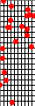
You may wish to re-use the functions from exercise 138.
10.4 Russian Dolls
The problem may strike you as somewhat abstract or even absurd; after all it isn’t clear why you would want to represent Russian dolls or what you would do with such a representation. Suspend your disbelief and read along; it is a worthwhile exercise. Now consider the problem of representing such Russian dolls with BSL data. With a little bit of imagination, it is easy to see that an artist can create a nest of Russian dolls that consists of an arbitrary number of dolls. After all, it is always possible to wrap another layer around some given Russian doll. Then again, you also know that deep inside there is a solid doll without anything inside.
(define-struct layer (color doll))
(make-layer "green" "red")
(make-layer "yellow" (make-layer "green" "red"))
(make-layer "pink" (make-layer "black" "white"))
; RD -> Number ; how many dolls are a part of an-rd (define (depth an-rd) (cond [(string? an-rd) ...] [(layer? an-rd) (... (layer-color an-rd) ... (depth (layer-doll an-rd)) ...)]))
(layer-color an-rd) extracts the string that describes the color of the current layer;
(layer-doll an-rd) extracts the doll contained within the current layer; and
according to the purpose statement, (depth (layer-doll an-rd)) determines how many dolls (layer-doll an-rd) consists of.
; RD -> Number ; how many dolls are a part of an-rd (define (depth an-rd) (cond [(string? an-rd) 1] [(layer? an-rd) (+ (depth (layer-doll an-rd)) 1)]))
(check-expect (depth (make-layer "yellow" (make-layer "green" "red"))) 3) (check-expect (depth "red") 1)
Exercise 140. Design the function colors. It consumes a Russian doll and produces a string of all colors, separate by a comma and a space. Thus our example should produce"yellow, green, red"
Exercise 141. Design the function inner, which consumes an RD and produces the (color of the) innermost doll.
10.5 Lists And World
Sample Problem: Design a world program that simulates firing shots. Every time the “player” hits the space bar, the program adds a shot to the bottom of the canvas. These shots rise vertically at the rate of one pixel per tick.
; physical constants (define HEIGHT 80) (define WIDTH 100) (define XSHOTS (/ WIDTH 2)) ; graphical constants (define BACKGROUND (empty-scene WIDTH HEIGHT)) (define SHOT (triangle 3 "solid" "red"))
; A List-of-shots is one of: ; – empty ; – (cons Shot List-of-shots) ; interp.: the collection of shots fired and moving straight up
; A ShotWorld is List-of-numbers. ; interp.: each number represents the y coordinate of a shot
(check-expect (to-image (cons 10 empty)) (place-image SHOT XSHOTS 10 BACKGROUND))
; ShotWorld -> Image (define (to-image w) (cond [(empty? w) ...] [else ... (first w) ... (to-image (rest w)) ...]))
(place-image SHOT XSHOTS (first w) (to-image (rest w)))
; physical constants (define HEIGHT 80) (define WIDTH 100) (define XSHOTS (/ WIDTH 2)) ; graphical constants (define BACKGROUND (empty-scene WIDTH HEIGHT)) (define SHOT (triangle 3 "solid" "red")) ; A ShotWorld is List-of-numbers. ; interp.: the collection of shots fired and moving straight up ; ShotWorld -> ShotWorld ; move each shot up by one pixel (define (tock w) (cond [(empty? w) empty] [else (cons (sub1 (first w)) (tock (rest w)))])) ; ShotWorld KeyEvent -> ShotWorld ; add a shot to the world if the space bar was hit (define (keyh w ke) (cond [(key=? ke " ") (cons HEIGHT w)] [else w])) ; ShotWorld -> Image ; add each shot y on w at (MID,y) to the background image (define (to-image w) (cond [(empty? w) BACKGROUND] [else (place-image SHOT XSHOTS (first w) (to-image (rest w)))])) ; ShotWorld -> ShotWorld (define (main w0) (big-bang w0 (on-tick tock) (on-key keyh) (to-draw to-image)))
Figure 41 displays the complete function definition for to-image and indeed the rest of the program, too. The design of tock is just like the design of to-image and you should work through it for yourself. The signature of the keyh handler, though, poses one interesting question. It specifies that the handler consumes two inputs with non-trivial data definitions. On one hand, the ShotWorld is self-referential data definition. On the other hand, the definition for KeyEvents is a large enumeration. For now, we have you “guess” which of the two arguments should drive the development of the template; later we will study such cases in depth.
(define (keyh w ke) (cond [(key=? ke "left") ...] [(key=? ke "right") ...] ... [(key=? ke " ") ...] ... [(key=? ke "a") ...] ... [(key=? ke "z") ...]))
Exercise 142. Equip the program in figure 41 with tests and make sure it passes those. Explain what main does. Then run the program via main.
Exercise 143. Experiment whether the arbitrary decisions concerning constants are truly easy to change. For example, determine whether changing a single constant definition achieves the desired outcome:
change the height of the canvas to 220 pixels;
change the width of the canvas to 30 pixels;
change the x location of the line of shots to “somewhere to the left of the middle;”
change the background to a green rectangle; and
change the rendering of shots to a red elongated rectangle.
Also check whether it is possible to double the size of the shot without changing anything else, change its color to black, or change its form to "outline".
Exercise 144. If you run main, press the space bar (fire a shot), and wait for a good amount of time, the shot disappears from the canvas. When you shut down the world canvas, however, the result is a world that still contains this invisible shot.
Design an alternative tock function, which not just moves shots one pixel per clock tick but also eliminates those whose coordinates places them above the canvas. Hint: You may wish to consider the design of an auxiliary function for the recursive cond clause.
Exercise 145. Turn the exercise of exercise 139 into a world program. Its main function should consume the rate at which to display the balloon throwing:
; Number -> ShotWorld ; display the student riot at rate ticks per second (define (main rate) (big-bang empty (on-tick drop-balloon rate) (stop-when long-enough) (to-draw to-image))) Naturally, the riot should stop when the students are out of balloons.
11 More on Lists
11.1 Functions that Produce Lists
Call this new function wage*. Its task is to process all employee work hours and to determine the wages due to each of them. For simplicity, let us assume that the input is a list of numbers, each representing the number of hours that one employee worked, and that the expected result is a list of the weekly wages earned, also represented with a list of numbers.
; List-of-numbers -> List-of-numbers ; compute the weekly wages for all given weekly hours (define (wage* alon) empty)
given: | expected: |
(define (wage* alon) (cond [(empty? alon) ...] [else (... (first alon) ... (wage* (rest alon)) ...)]))
It is now time for the most creative design step. Following the design recipe, we consider each cond-line of the template in isolation. For the non-recursive case, (empty? alon) is true, meaning the input is empty. The examples from above specify the desired answer, empty, and so we are done.
(first alon) yields the first number on alon, which is the first number of hours worked;
(rest alon) is the rest of the given list; and
(wage* (rest alon)) says that the rest is processed by the very function we are defining. As always we use its signature and its purpose statement to figure out the result of this expression. The signature tell us that it is a list of numbers, and the purpose statement explains that this list represents the list of wages for its input, which is the rest of the list of hours.
; List-of-numbers -> List-of-numbers ; compute the weekly wages for all given weekly hours (define (wage* alon) (cond [(empty? alon) empty] [else (cons (wage (first alon)) (wage* (rest alon)))])) ; Number -> Number ; compute the wage for h hours of work (define (wage h) (* 12 h))
Exercise 146. Translate the examples into tests and make sure they all succeed. Then change the function in figure 42 so that everyone gets $14 per hour. Now revise the entire program so that changing the wage for everyone is a single change to the entire program and not several.
Exercise 147. No employee could possibly work more than 100 hours per week. To protect the company against fraud, the function should check that no item of the input list of wage* exceeds 100. If one of them does, the function should immediately signal an error. How do we have to change the function in figure 42 if we want to perform this basic reality check?
Show the products of the various steps in the design recipe. If you are stuck, show someone how far you got according to the design recipe. The recipe isn’t just a design tool for you to use; it is also a diagnosis system so that others can help you help yourself.
Exercise 148. Design convertFC. The function converts a list of Fahrenheit measurements to a list of Celsius measurements.
Exercise 149. Design the function convert-euro, which converts a list of U.S. dollar amounts into a list of euro amounts. Look up the current exchange rate in a newspaper.
Generalize convert-euro to the function convert-euro*, which consumes an exchange rate and a list of dollar amounts and converts the latter into a list of euro amounts.
Exercise 150. Design the function subst-robot, which consumes a list of toy descriptions (strings) and replaces all occurrences of "robot" with "r2d2"; all description remain the same.
Generalize subst-robot to the function substitute. The new function consumes two strings, called new and old, and a list of strings. It produces a new list of strings by substituting all occurrences of old with new.
11.2 Structures In Lists
Representing a work week as a number is a bad choice because the printing of a paycheck requires more information than hours worked per week. Also, not all employees earn the same amount per hour. Fortunately a list may contain items other than atomic values; indeed, lists may contain whatever values we want, especially structures.
(define-struct work (employee rate hours)) ; Work is a structure: (make-work String Number Number). ; interp. (make-work n r h) combines the name (n) ; with the pay rate (r) and the number of hours (h) worked.
; Low (list of works) is one of: ; – empty ; – (cons Work Low) ; interp. an instance of Low represents the work efforts ; of some hourly employees
empty (cons (make-work "Robby" 11.95 39) empty) (cons (make-work "Matthew" 12.95 45) (cons (make-work "Robby" 11.95 39) empty))
; Low -> List-of-numbers ; compute the weekly wages for all given weekly work records (define (wage*.v2 an-low) empty)
The third step of the design recipe is to work through an example. Let us start with the second list above. It contains one work record, namely, (make-work "Robby" 11.95 39). Its interpretation is that "Robby" worked for 39 hours and that he is paid at the rate of $11.95 per hour. Hence his wage for the week is $466.05, i.e., (* 11.95 39). The desired result for wage*.v2 is therefore (cons 466.05 empty). Naturally, if the input list contained two work records, we would perform this kind of computation twice, and the result would be a list of two numbers. Before you read on, determine the expected result for the third data example above.
(define (wage*.v2 an-low) (cond [(empty? an-low) ...] [(cons? an-low) (... (first an-low) ... (wage*.v2 (rest an-low)) ...)]))
(define (wage*.v2 an-low) (cond [(empty? an-low) ...] [(cons? an-low) (... (first an-low) ... (work-employee (first an-low)) ... (work-rate (first an-low)) ... (work-hours (first an-low)) (wage*.v2 (rest an-low)) ...)]))
(define (wage*.v2 an-low) (cond [(empty? an-low) ...] [(cons? an-low) (... (for-work (first an-low)) ... (wage*.v2 (rest an-low)) ...)])) ; Work -> ??? ; a template for functions that process work structures (define (for-work w) (... (work-employee w) ... (work-rate w) ... (work-hours w) ...))
(first an-low) extracts the first work structure from the list;
(for-work ...) says that you wish to design a function that processes work structures;
(rest an-low) extracts the rest of the given list; and
according to the purpose statement, (wage*.v2 (rest an-low)) determines the list of wages for all the work records other than the first one.
; Low -> List-of-numbers ; compute the weekly wages for all given weekly work records (check-expect (wage*.v2 (cons (make-work "Robby" 11.95 39) empty)) (cons (* 11.95 39) empty)) (define (wage*.v2 an-low) (cond [(empty? an-low) empty] [(cons? an-low) (cons (wage.v2 (first an-low)) (wage*.v2 (rest an-low)))])) ; Work -> Number ; compute the wage for the given work record w (define (wage.v2 w) (* (work-rate w) (work-hours w)))
Exercise 151. The wage*.v2 function consumes a list of work records and produces a list of numbers. Of course, functions may also produce lists of structures.
Develop a data representation for pay checks. Assume that a pay check contains two pieces of information: the name of the employee and an amount. Then design the function wage*.v3. It consumes a list of work records and computes a list of (representations of) pay checks from it, one per work record.
In reality, a pay check also contains an employee number. Develop a data representation for employee information and change the data definition for work records so that it uses employee information and not just a string for the employee’s name. Also change your data representation of pay checks so that it contains an employee’s name and number, too. Finally, design wage*.v4, a function that maps lists of revised work records to lists of revised pay checks.
Note: This exercise demonstrates the iterative refinement of a task. Instead of using data representations that include all relevant information, we started from simplistic representation of pay checks and gradually made the representation realistic. For this simple program, refinement is overkill; later we will encounter situations where iterative refinement is not just an option but a necessity.
Exercise 152. Design the function sum, which consumes a list of Posns and produces the sum of all of its x coordinates.
Exercise 153. Design the function translate. It consumes and produces lists of Posns. For each Posn (x,y) in the former, the latter contains (x,y+1).—
We borrow the word “translate” from geometry, where the movement of a point by a constant distance along a straight line is called a translation.
Exercise 154. Design the function legal. Like translate from exercise 153 the function consumes and produces a list of Posns. The result contains all those Posns whose x coordinates are between 0 and 100 and whose y coordinates are between 0 and 200.
(define-struct phone (area switch four)) ; A Phone is a structure: ; (make-phone Three Three Four) ; A Three is between 100 and 999. ; A Four is between 1000 and 9999. Design the function replace. It consumes a list of Phones and produces one. It replaces all occurrence of area code 713 with 281.
11.3 Lists In Lists, Files
Functions And Programs introduces read-file, a function for reading an entire text file as a string. In other words, the creator of read-file chose to represent text files as strings, and the function creates the data representation for specific files (specified by a name). Text files aren’t plain long texts or strings, however. They are organized into lines and words, rows and cells, and many other ways. In short, representing the content of a file as a plain string might work on rare occasions but is usually a bad choice.
ttt.txt
TTT
Put up in a place
where it's easy to see
the cryptic admonishment
T.T.T.
When you feel how depressingly
slowly you climb,
it's well to remember that
Things Take Time.
Piet Hein
"TTT\n \nPut up in a place\nwhere ..."
- One way to represent this file is as a list of lines, where each line is represented as one string:Here the second item of the list is the empty string because the file contains an empty line.
- Another way is to use a list of all possible words, again each word represented to a string:Note how the empty second line disappears with this representation. After all, there are no words on the empty line.
- And a third representation mixes the first two with a list of list of words:
(cons (cons "TTT" empty) (cons empty (cons (cons "Put" (cons "up" (cons "in" (cons ... empty)))) (cons ... empty)))) The advantage of this representation over the second one is that it preserves the organization of the file, including the emptiness of the second line. Of course, the price is that all of a sudden lists contain lists.
Before we get started, take a look at figure 44. It introduces a
number of useful file reading functions that come with BSL. They are not
comprehensive and there are many other ways of dealing with text from
files, and you will need to know a lot more to deal with all possible text
files. For our purposes here—
; String -> String ; produces the content of file f as a string (define (read-file f) ...) ; String -> List-of-string ; produces the content of file f as a list of strings, ; one per line (define (read-lines f) ...) ; String -> List-of-string ; produces the content of file f as a list of strings, ; one per word (define (read-words f) ...) ; String -> List-of-list-of-string ; produces the content of file f as a list of list of ; strings, one list per line and one string per word (define (read-words/line f) ...) ; All functions that read a file consume the name of a file ; as a String argument. They assume the specified file ; exists in the same folder as the program; if not they ; signal an error.
One problem with figure 44 is that they use the names of two data definitions that do not exist yet, including one involving list-containing lists. As always, we start with a data definition, but this time, we leave this task to you. Hence, before you read on, solve the following exercises. The solutions are needed to make complete sense out of the figure, and without working through the solutions, you cannot really understand the rest of this section.
Exercise 156. You know what the data definition for List-of-strings looks like. Spell it out. Make sure that you can represent Piet Hein’s poem as an instance of the definition where each line is a represented as a string and another one where each word is a string. Use read-lines and read-words to confirm your representation choices.
Next develop the data definition for List-of-list-of-strings. Again, represent Piet Hein’s poem as an instance of the definition where each line is a represented as a list of strings, one per word, and the entire poem is a list of such line representations. You may use read-words/line to confirm your choice.
As you probably know, operating systems come with programs that measure various statistics of files. Some count the number of lines, others count the number of words in a file. A third may determine how many words appear per line. Let us start with the latter to illustrate how the design recipe helps with the design of complex functions.
; LLS -> List-of-numbers ; determine the number of words on each line (define (words-on-line lls) empty)
(define line0 (cons "hello" (cons "world" empty))) (define line1 empty) (define lls0 empty) (define lls1 (cons line0 (cons line1 empty)))
Once you have data examples, it is easy to formulate functional examples; just imagine applying the function to each of the data example. When apply words-on-line to lls0, you should get the empty list back, because there are no lines. When you apply words-on-line to lls1, you should get a list of two numbers back, because there are two lines. The two numbers are 2 and 0, respectively, given that the two lines in lls1 contain two and no words each.
(check-expect (words-on-line lls0) empty) (check-expect (words-on-line lls1) (cons 2 (cons 0 empty)))
(define (words-on-line lls) (cond [(empty? lls) ...] [else (... (first lls) ; a list of strings ... (words-on-line (rest lls)) ...)]))
(define (line-processor ln) (cond [(empty? lls) ...] [else (... (first ln) ; a string ... (line-processor (rest ln)) ...)]))
(first lls) extracts the first line from the non-empty list of (represented) lines;
(line-processor (first lls)) suggests that we may wish to design an auxiliary function to process this line;
(rest lls) is the rest of the list of line;
(words-on-line (rest lls)) computes a list of words per line for the rest of the list. How do we know this? We promised just that with the signature and the purpose statement for words-on-line.
; List-of-strings -> Number ; count the number of words on los (define (words# los) 0)
(define (words# los) (how-many los))
; A LLS is one of: ; – empty ; – (cons Los LLS) ; interp. a list of lines, each line is a list of strings (define line0 (cons "hello" (cons "world" empty))) (define line1 empty) (define lls0 empty) (define lls1 (cons line0 (cons line1 empty))) ; LLS -> List-of-numbers ; determine the number of words on each line (check-expect (words-on-line lls0) empty) (check-expect (words-on-line lls1) (cons 2 (cons 0 empty))) (define (words-on-line lls) (cond [(empty? lls) empty] [else (cons (length (first lls)) (words-on-line (rest lls)))]))
You may wish to look over the rest of functions that come with BSL. Some may look obscure now, but they may just be useful in one of the upcoming problems. Then again, using such functions saves only your time. You just may wish to design them from scratch to practice your design skills or to fill time.
Figure 45 summarizes the full design for our sample problem. The figure includes two test cases. Also, instead of using the separate function words#, the definition of words-on-line simply calls the length function that comes with BSL. Experiment with the definition in DrRacket and make sure that the two test cases cover the entire function definition.
; String -> List-of-numbers ; count the number of words on each line in the given file (define (file-statistic file-name) (words-on-line (read-words/line file-name)))
This idea of composing a built-in function with a newly designed function is common. Naturally, people don’t design functions randomly and expect to find something in the chosen programming language to complement their design. Instead, program designers plan ahead and design the function to the output that available functions deliver. More generally still and as mentioned above, it is common to think about a solution as a composition of two computations and to develop an appropriate data collection with which to communicate the result of one computation to the second one, where each computation is each implemented with a function.
Exercise 157. Design a program that converts a list of lines into a string. The strings should be separated by blank spaces (" "). The lines should be separated with a newline ("\n").
Challenge: Remove all extraneous white spaces in your version of the Piet Hein poem. When you are finished with the design of the program, use it like this:(write-file "ttt.dat" (collapse (read-words/line "ttt.txt")))
The two files "ttt.dat" and "ttt.txt" should be identical.
Exercise 158. Design a program that removes all articles from a text file. The program consumes the name n of a file, reads the file, removes the articles, and writes the result out to a file whose name is the result of concatenating "no-articles-" with n. For this exercise, an article is one of the following three words: "a", "an", and "the".
Use read-words/line so that the transformation retains the organization of the original text into lines and words. When the program is designed, run it on the Piet Hein poem.
Exercise 159. Design a program that encodes text files numerically. Each letter in a word should be encoded as a numeric three-letter string with a value between 0 and 256. Here is our encoding function for letters:
; 1String -> String ; convert the given 1string into a three-letter numeric string ; 1String -> String ; auxiliary for stating tests (define (code1 c) (number->string (string->int c))) (check-expect (encode-letter "\t") (string-append "00" (code1 "\t"))) (check-expect (encode-letter "a") (string-append "0" (code1 "a"))) (check-expect (encode-letter "z") (code1 "z")) (define (encode-letter s) (cond [(< (string->int s) 10) (string-append "00" (code1 s))] [(< (string->int s) 100) (string-append "0" (code1 s))] [else (code1 s)])) Before you start, explain this function. Also recall how a string can be converted into a list of 1Strings.Again, use read-words/line to preserve the organization of the file into lines and words.
Exercise 160. Design a BSL program that simulates the Unix command wc. The purpose of the command is to count the number of characters (1Strings), words, and lines in a given file. That is, the command consumes the name of a file and produces a value that consists of three numbers.
Exercise 161. Mathematics teachers may have introduced you to matrix calculations by now. Numeric programs deal with those, too. Here is one possible data representation for matrices:
; A Matrix is one of: ; – empty ; – (cons LN Matrix) ; An LN is one of: ; – empty ; – (cons Number LN) ; interp. a matrix is a list of rows, a row is a list of numbers ; constraint: all rows are of the same length Study it and translate the two-by-two matrix consisting of the numbers 11, 12, 21, 22 into this data representation. Stop, don’t read on until you have figured out the data examples.Here is the solution for the five-second puzzle:
(define row1 (cons 11 (cons 12 empty))) (define row2 (cons 21 (cons 22 empty))) (define mat1 (cons row1 (cons row2 empty))) If you didn’t create it yourself, study it now.The following function implements the important mathematical operation of transposing the entries in a matrix. To transpose means to mirror the entries along the diagonal, that is, the line from the top-left to the bottom-right. Again, stop! Transpose mat1 by hand, then read on:
; Matrix -> Matrix ; transpose the items on the given matrix along the diagonal (define wor1 (cons 11 (cons 21 empty))) (define wor2 (cons 12 (cons 22 empty))) (define tam1 (cons wor1 (cons wor2 empty))) (check-expect (transpose mat1) tam1) (define (transpose lln) (cond [(empty? (first lln)) empty] [else (cons (first* lln) (transpose (rest* lln)))])) The definition assumes two auxiliary functions:
first*, which consumes a matrix and produces the first column as a list of numbers;
rest*, which consumes a matrix and removes the first column. The result is a matrix.
Even though you lack definitions for these functions, you should be able to understand how transpose works. You should also understand that you cannot design this function with the design recipes you have seen so far. Explain why.
Design the two “wish list” functions. Then complete the design of the transpose with some test cases.
11.4 Lists In Structures, Interactions
A Graphical Editor is about the design of an interactive graphical one-line editor. It suggests two different ways to represent the state of the editor and urges you to explore both: a structure that contains pair of strings or a structure that combines a string with an index to a current position (see exercise 76).
(define-struct editor (pre post)) ; An Editor is (make-editor Lo1S Lo1S) ; An Lo1S is one of: ; – empty ; – (cons 1String Lo1S)
(define good (cons "g" (cons "o" (cons "o" (cons "d" empty))))) (define all (cons "a" (cons "l" (cons "l" empty)))) (define lla (cons "l" (cons "l" (cons "a" empty)))) ; data example 1: (make-editor all good) ; data example 2: (make-editor lla good)
- (make-editor pre post) could mean the letters in pre precede the cursor and those in post succeed it and that the combined text is
(string-append (implode pre) (implode post))
- (make-editor pre post) could equally well mean that the letters in pre precede the cursor in reverse order. If so, we obtain the text in the displayed editor like this:
(string-append (implode (rev pre)) (implode post))
The function rev must consume a list of 1Strings and produce their reverse.
Both interpretations are fine choices, but it turns out that using the second one greatly simplifies the design of the program. The rest of this subsection demonstrates this point, illustrating the use of lists inside of structures at the same time. To appreciate the lesson properly, you should have solved the exercises in A Graphical Editor.
; Lo1s -> Lo1s ; produce a reverse version of the given list (check-expect (rev (cons "a" (cons "b" (cons "c" empty)))) (cons "c" (cons "b" (cons "a" empty)))) (define (rev l) l)
; Lo1s 1String -> Lo1s ; create a new list by adding s to the end of l (check-expect (add-at-end (cons "c" (cons "b" empty)) "a") (cons "c" (cons "b" (cons "a" empty)))) (define (add-at-end l s) l)
(define (add-at-end l s) (cond [(empty? l) ...] [else (... (first l) ... ... (add-at-end (rest l) s) ...)]))
(add-at-end empty s)
(define (add-at-end l s) (cond [(empty? l) (cons s empty)] [else (cons (first l) (add-at-end (rest l) s))]))
Exercise 162. Design the function create-editor. The function consumes two strings and produces an Editor. The first string is the text to the left of the cursor and the second string is the text to the right of the cursor. The rest of the section relies on this function.
; constants (define HEIGHT 20) ; the height of the editor (define WIDTH 200) ; its width (define FONT-SIZE 11) ; the font size (define FONT-COLOR "black") ; the font color ; graphical constants (define MT (empty-scene WIDTH HEIGHT)) (define CURSOR (rectangle 1 HEIGHT "solid" "red"))
; Editor -> Image ; render an editor as an image of the two texts separated by the cursor (define (editor-render e) MT) ; Editor KeyEvent -> Editor ; deal with a key event, given some editor (define (editor-kh ed ke) ed)
; main : String -> Editor ; launch the editor given some initial string (define (main s) (big-bang (create-editor s "") (on-key editor-kh) (to-draw editor-render)))
(check-expect (editor-kh (create-editor "" "") "e") (create-editor "e" "")) (check-expect (editor-kh (create-editor "cd" "fgh") "e") (create-editor "cde" "fgh"))
Before you read on, you should make up examples that illustrate how editor-kh works when you press the backspace ("\b") key to delete some letter, the "left" and "right" arrow keys to move the cursor, or some other arrow keys. In all cases, consider what should happen when the editor is empty, when the cursor is at the left end or right end of the non-empty string in the editor, and when it is in the middle. Even though you are not working with intervals here, it is still a good idea to develop examples for the “extreme” cases.
Once you have test cases, it is time to develop the template. In the case of editor-kh you are working with a function that consumes two complex forms of data: one is a structure containing lists, the other one is a large enumeration of strings. Generally speaking, the use of two complex inputs calls for a special look at the design recipe; but in cases like these, it is also clear that you should deal with one of the inputs first, namely, the keystroke.
(define (editor-kh ed k) (cond [(key=? k "left") ...] [(key=? k "right") ...] [(key=? k "\b") ...] [(key=? k "\t") ...] [(key=? k "\r") ...] [(= (string-length k) 1) ...] [else ...]))
Exercise 163. Explain why the template for editor-kh deals with "\t" and "\r" before it checks for strings of length 1.
(define (editor-kh ed k) (cond [(key=? k "left") (editor-lft ed)] [(key=? k "right") (editor-rgt ed)] [(key=? k "\b") (editor-del ed)] [(key=? k "\t") ed] [(key=? k "\r") ed] [(= (string-length k) 1) (editor-ins ed k)] [else ed]))
(check-expect (editor-ins (make-editor empty empty) "e") (make-editor (cons "e" empty) empty)) (check-expect (editor-ins (make-editor (cons "d" empty) (cons "f" (cons "g" empty))) "e") (make-editor (cons "e" (cons "d" empty)) (cons "f" (cons "g" empty))))
At this point, you should do two things. First, run the tests for this function. Second, use the interpretation of Editor and explain abstractly why this function performs the insertion. And if this isn’t enough, you may wish to compare this simple definition with the one from exercise 73 and figure out why the other one needs an auxiliary function while our definition here doesn’t.
; Editor -> Editor ; move the cursor position one 1String left, if possible (define (editor-lft ed) ed) ; Editor -> Editor ; move the cursor position one 1String right, if possible (define (editor-rgt ed) ed) ; Editor -> Editor ; delete one 1String to the left of the cursor, if possible (define (editor-del ed) ed) Again, it is critical that you work through a good range of examples.
(place-image/align (beside (text "pre" FONT-SIZE FONT-COLOR) CURSOR (text "post" FONT-SIZE FONT-COLOR)) 1 1 "left" "top" MT)
; Editor -> Image (define (editor-render e) (place-image/align (beside (editor-text (editor-pre e)) CURSOR (editor-text (editor-post e))) 1 1 "left" "top" mt))
; Lo1s -> Image ; render a list of 1Strings as a text image (define (editor-text s) (text "" FONT-SIZE FONT-COLOR))
(create-editor "pre" "post")
(make-editor (cons "e" (cons "r" (cons "p" empty))) (cons "p" (cons "o" (cons "s" (cons "t" empty)))))
(check-expect (editor-text (cons "p" (cons "o" (cons "s" (cons "t" empty))))) (text "post" FONT-SIZE FONT-COLOR))
(define (editor-text s) (cond [(empty? s) ...] [else (... (first s) ... (editor-text (rest s)) ...)]))
Exercise 165. Just because we recalled implode, you may not do so when you need to. It turns out that it is also possible to finish the design of editor-text without implode, following the same old guidelines we have used so many times. You may need one hint though, because you may not expect this: (circle 0 "solid" "red") creates an “empty” or “invisible” image.
(define (editor-render e) (place-image/align (beside (editor-text (reverse (editor-pre e))) CURSOR (editor-text (editor-post e))) 1 1 "left" "top" mt))
12 Design By Composition
This last chapter of part II covers “design by composition.” By now you know that programs are complex products and that their production requires the design of many collaborating functions. This collaboration work well if the designer knows when to design several functions and how to compose these functions into one program.
You have encountered this need to design interrelated functions several times. Sometimes a problem statement implies several different tasks, and each task is best realized with a function. At other times, a data definition may refer to another one, and in that case, a function processing the former kind of data relies on a function processing the latter.
In this chapter, we present yet other scenarios that call for the design of many functions and their composition. To support this kind of work, the chapter presents some informal guidelines on divvying up functions and composing them. The next chapter then introduces some well-known examples whose solutions rely on the use of these guidelines and the design recipe in general. Since these examples demand complex forms of lists, however, this chapter starts with a section on a convenient way to write down complex lists.
12.1 The list function
At this point, you should have tired of writing so many conses
just to create a list, especially for lists that contain a bunch of
values. Fortunately, Racket—
(list 0 1 2 3 4 5 6 7 8 9)
(list (list "bob" 0 "a") (list "carl" 1 "a") (list "dana" 2 "b") (list "erik" 3 "c") (list "frank" 4 "a") (list "grant" 5 "b") (list "hank" 6 "c") (list "ian" 8 "a") (list "john" 7 "d") (list "karel" 9 "e"))
Start by determining how many items each list and each nested list contains. Use check-expect to express your answers; this ensures that your abbreviations are really the same as the long-hand.
Use check-expect to express your answers.
Exercise 168. On some occasions lists are formed with cons and list. Reformulate the following lists using cons and empty exclusively:
Use check-expect to express your answers.
12.2 Composing Functions
Formulate auxiliary function definitions for every dependency between quantities in the problem statement. In short, design one function per task.
Formulate auxiliary function definitions when one data definition points to a second data definition. Roughly, design one template per data definition.
If the composition of values requires knowledge of a particular domain of application—
for example, composing two (computer) images, accounting, music, or science— design an auxiliary function. If the composition of values requires a case analysis of the available values—
for example, is a number positive, zero, or negative— use a cond expression. If the cond looks complex, design an auxiliary function whose inputs are the partial results and whose function body is the cond expression. Doing so separates out the case analysis from the recursive process. If the composition of values must process an element from a self-referential data definition—
a list, a natural number, or something like those— design an auxiliary function. If everything fails, you may need to design a more general function and define the main function as a specific use of the general function. This suggestion sounds counter-intuitive but it is called for in a remarkably large number of cases.
The last two criteria are situations that we haven’t discussed in any detail, though examples have come up before. The next two sections illustrate these principles with additional examples.
Wish Lists
Maintain a list of function headers that must be designed to complete a program. Writing down complete function headers ensures that you can test those portions of the programs that you have finished, which is useful even though many tests will fail. Of course, when the wish list is empty, all tests should pass and all functions should be covered by tests.
12.3 Recursive Auxiliary Functions
People need to sort things all the time, and so do programs. Investment advisors sort portfolios by the profit each holding generates. Game programs sort lists of players according to scores. And mail programs sort messages according to date or sender or some other criteria.
Sample Problem: Design a function that sorts a list of (real) numbers.
; List-of-numbers -> List-of-numbers ; produces a sorted version of alon (define (sort-> alon) alon)
; List-of-numbers -> List-of-numbers ; produces a version of alon, sorted in descending order (check-expect (sort-> empty) empty) (check-expect (sort-> (list 12 20 -5)) (list 20 12 -5)) (check-expect (sort-> (list 3 2 1)) (list 3 2 1)) (check-expect (sort-> (list 1 2 3)) (list 3 2 1)) (define (sort-> alon) alon)
(define (sort-> alon) (cond [(empty? alon) ...] [else (... (first alon) ... (sort-> (rest alon)) ...)]))
Inserting a number into a sorted list clearly isn’t a simple task. It demands searching through the sorted list to find the proper place of the item. Searching through any list, however, demands an auxiliary function, because lists are of arbitrary size and, by hint 3 of the preceding section, processing values of arbitrary calls for the design of an auxiliary function.
; Number List-of-numbers -> List-of-numbers ; insert n into the sorted list of numbers alon (define (insert n alon) alon)
(define (sort-> alon) (cond [(empty? alon) empty] [else (insert (first alon) (sort-> (rest alon)))]))
(check-expect (insert 5 empty) (list 5))
(check-expect (insert 5 (list 6)) (list 6 5)) (check-expect (insert 5 (list 4)) (list 5 4))
(check-expect (insert 12 (list 20 -5)) (list 20 12 -5))
Note what the development of examples teaches us. The insert function has to find the first number that is smaller than the given n. When there is no such number, the function eventually reaches the end of the list and it must add n to the end. Now, before we move on to the template, you should work out some additional examples. To do so, you may wish to use the supplementary examples for sort->.
(define (insert n alon) (cond [(empty? alon) ...] [else (... (first alon) ... (insert n (rest alon)) ...)]))
To fill the gaps in the template of insert, we again proceed on a case-by-case basis. The first case concerns the empty list. According to the first example, (list n) is the expression needed in the first cond clause, because it constructs a sorted list from n and alon.
(insert 7 (list 6 5 4))
(insert 0 (list 6 2 1 -1))
If so, all the items in alon are smaller than n because alon is already sorted. The answer in that case is (cons n alon).
- If, however, n is smaller than (first alon), then the function has not yet found the proper place to insert n into alon. The first item of the result must be (first alon) and that n must be inserted into (rest alon). The final result in this case isbecause this list contains n and all items of alon in sorted order—
which is what we need.
Figure 46 contains the complete definitions of insert and sort->. Copy it into the definition area of DrRacket, add the test cases back in, and test the program. All tests should pass now and they should cover all expressions.
Terminology This particular program for sorting is known as insertion sort in the programming literature. Later we will study alternative ways to sort lists, using an entirely different design strategy.
; List-of-numbers -> List-of-numbers ; produces a sorted version of alon (define (sort-> alon) (cond [(empty? alon) empty] [(cons? alon) (insert (first alon) (sort-> (rest alon)))])) ; Number List-of-numbers -> List-of-numbers ; insert n into the sorted list of numbers alon (define (insert n alon) (cond [(empty? alon) (cons n empty)] [else (if (>= n (first alon)) (cons n alon) (cons (first alon) (insert n (rest alon))))]))
(define-struct email (from date message)) ; A Email Message is a structure: ; – (make-email String Number String) ; interp. (make-email f d m) represents text m sent by ; f, d seconds after the beginning of time Also develop a program that sorts lists of email messages by name. To compare two strings alphabetically, use the string<? primitive.
(define-struct gp (name score)) ; A GamePlayer is a structure: ; – (make-gp String Number) ; interp. (make-gp p s) represents player p who scored ; a maximum of s points
; Number List-of-numbers -> Boolean (define (search n alon) (cond [(empty? alon) false] [else (or (= (first alon) n) (search n (rest alon)))])) It determines whether some number occurs in a list of numbers. The function may have to traverse the entire list to find out that the number of interest isn’t contained in the list.Develop the function search-sorted, which determines whether a number occurs in a sorted list of numbers. The function must take advantage of the fact that the list is sorted.
12.4 Generalizing Functions
Auxiliary functions are also needed when a problem statement is too narrow. Conversely, it is common for programmers to generalize a given problem just a bit to simplify the solution process. When they discover the need for a generalized solution, they design an auxiliary function that solves the generalized problem and a main function that just calls this auxiliary function with special arguments.
Sample Problem: Design a program that renders a polygon into an empty 50 by 50 scene.
A polygon is a planar figure with at least three corners consecutively connected by three straight sides. And so on.
As the domain knowledge statement says, a polygon consists of at least three sides and that means at least three Posns. Thus the answer to our question is that representations of polygons should be lists of at least three Posns.
The point of this discussion is that a naively chosen data representation—
(define MT (empty-scene 50 50)) ; Polygon -> Image ; to render the given polygon p into MT (define (render-poly p) MT)
(check-expect (render-poly (list (make-posn 20 0) (make-posn 10 10) (make-posn 30 10))) (add-line (add-line (add-line MT 20 0 10 10 "red") 10 10 30 10 "red") 30 10 20 0 "red"))
(check-expect (render-poly (list (make-posn 10 10) (make-posn 20 10) (make-posn 20 20) (make-posn 10 20))) (add-line (add-line (add-line (add-line MT 10 10 20 10 "red") 20 10 20 20 "red") 20 20 10 20 "red") 10 20 10 10 "red"))
In general, it is better to formulate conditions in via built-in predicates and selectors than your own (recursive) functions. We will explain this remark in detail later.
(define (render-poly p) (cond [(empty? (rest (rest (rest p)))) (... (first p) ... (second p) ... (third p) ...)] [else ( ... (first p) ... (render-poly (rest p)) ...)]))
; Image Posn Posn -> Image ; draw a red line from Posn p to Posn q into im (define (render-line im p q) im)
(render-line (render-line (render-line MT (first p) (second p)) (second p) (third p)) (third p) (first p))
(define (render-poly p) (cond [(empty? (rest (rest (rest p)))) (render-line (render-line (render-line MT (first p) (second p)) (second p) (third p)) (third p) (first p))] [else (render-line (render-poly (rest p)) (first p) (second p))]))
; Image Posn Posn -> Image ; render a line from Posn p to Posn q into im (define (render-line im p q) (add-line im (posn-x p) (posn-y p) (posn-x q) (posn-y q) "red"))
Sixth and last, we must test the functions. You should add a test for render-line but for now you may just accept our correctness promise. In that case, testing immediately reveals flaws with the definition of render-poly; in particular, the test case for the square fails. On one hand, this is fortunate because it is the purpose of tests to find problems before they affect regular consumers. On the other hand, the flaw is unfortunate because we followed the design recipe, we made fairly regular decisions, and yet the function doesn’t work.
| (render-polygon p) | ||||
| 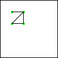 |
In addition, you may wonder what render-poly would do if we extended the original square with another point, say, (make-posn 10 5).
| (render-polygon p) | |||||
| 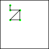 |
As a matter of fact, one could also argue that render-polygon is really the function that connects the successive dots specified by a list of Posns and connects the first and the last Posn of the trailing triangle. If we don’t draw this last, extra line, render-polygon is just a “connects the dots” function. And as such, it almost solves our original problem; all that is left to do is to add a line from the first Posn to the last one in the given Polygon.
Put differently, the analysis of our failure suggests two ideas at once. First, we should solve a different, a more general looking problem. Second, we should use the solution for this generalized problem to solve the original one.
Sample Problem: Design a program that connects a bunch of dots.
(check-expect (connect-dots (list (make-posn 20 0) (make-posn 10 10) (make-posn 30 10))) (add-line (add-line MT 20 0 10 10 "red") 10 10 30 10 "red"))
Exercise 174. Adapt the second example for render-poly to connect-dots.
(define (connect-dots p) (cond [(empty? (rest p)) (... (first p) ...)] [else (... (first p) ... (connect-dots (rest p)) ...)]))
(define (connect-dots p) (cond [(empty? (rest p)) MT] [else (render-line (connect-dots (rest p)) (first p) (second p))]))
Our argument that all Polygons are also NELoPs
is informal. You will see how to construct a formal argument—
Conversely, we say that connect-dots generalizes render-poly. Every input for the former is also an input for the latter. Or in terms of data definitions, every Polygon is also a NELoP. But there are many NELoPs that are not Polygons. To be precise, all lists of Posns that contain two items or one belong to NELoP but not to Polygon. The key insight for you is, however, that just because a function has to deal with more inputs than another function does not mean that the former is more complex than the latter; generalizations often simplify function definitions.
; Polygon -> Image ; add the Polygon p into an image in MT (define (render-polygon p) (render-line (connect-dots p) (first p) (last p)))
Exercise 175. Argue why it is acceptable to use last on Polygons. Also argue why you may reuse the template for connect-dots for last:
(define (last p) (cond [(empty? (rest p)) (... (first p) ...)] [else (... (first p) ... (last (rest p)) ...)])) Finally, develop examples for last, turn them into tests, and ensure that the definition of last in figure 47 works on your examples.
(require 2htdp/image) ; A Polygon is one of: ; – (list Posn Posn Posn) ; – (cons Posn Polygon) (define MT (empty-scene 50 50)) ; Polygon -> Image ; add the Polygon p into an image in MT (define (render-polygon p) (render-line (connect-dots p) (first p) (last p))) ; A NELoP is one of: ; – (cons Posn empty) ; – (cons Posn NELoP) ; NELoP -> Image ; connect the Posns in p (define (connect-dots p) (cond [(empty? (rest p)) MT] [else (render-line (connect-dots (rest p)) (first p) (second p))])) ; Image Posn Posn -> Image ; draw a red line from Posn p to Posn q into im (define (render-line im p q) (add-line im (posn-x p) (posn-y p) (posn-x q) (posn-y q) "red")) ; NELoP -> Posn ; extract the last Posn from p (define (last p) (cond [(empty? (rest (rest (rest p)))) (third p)] [else (last (rest p))]))
In summary, the development of render-poly naturally points us to
consider the general problem of connecting a list of successive dots. We
can then solve the original problem by defining a function that composes
the general function with other auxiliary functions. The program therefore
consists of a relatively straightforward main
function—
Use both ideas to define render-poly; make sure both definitions pass the test cases.
Exercise 177. Modify connect-dots so that it consumes an additional Posn structure to which the last Posn is connected. Then modify render-poly to use this new version of connect-dots. Note: this new version is called an accumulator version.
Naturally, functions such as last are available in a language like
Racket and polygon—
13 Extended Exercises
This chapter introduces four extended exercises, all of which require and solidify your understanding of the design recipe and the design guidelines. The first one is a batch program; the last three are interactive game programs, which means you are also expected to recall how to design “world” programs.
13.1 Rearranging Words
ader
aedr
aerd
adre
arde
ared
daer
eadr
eard
dare
rade
raed
dear
edar
erad
drae
rdae
read
dera
edra
erda
drea
rdea
reda
; Word -> List-of-words
One data representation for a word—
Exercise 178. Write down the data definition for List-of-words. Systematically make up examples of Words and List-of-words. Finally, formulate the functional example from above with check-expect. Instead of working with the full example, you may wish to start with a word of just two letters, say "d" and "e".
; Word -> List-of-words ; to create a list of all rearrangements of the letters in w (define (arrangements w) (cond [(empty? w) ...] [else (... (first w) ... (arrangements (rest w)) ...)]))
If the input is empty, there is only one possible rearrangement of the input: the empty word. Hence the result is (list empty), the list that contains the empty list as the only item.
- Otherwise there is a first letter in the word, and (first w) is that letter and the recursion produces the list of all possible rearrangements for the rest of the word. For example, if the list is
(list "d" "e" "r")
To obtain all possible rearrangements for the entire list, we must now insert the first item, "d" in our case, into all of these words between all possible letters and at the beginning and end.
(define (arrangements w) (cond [(empty? w) (list empty)] [else (insert-everywhere/in-all-words (first w) (arrangements (rest w)))]))
Exercise 179. Design insert-everywhere/in-all-words. It consumes a 1String and a list of words. The result is a list of words like its second argument, but with the first argument inserted at the beginning, between all letters, and at the end of all words of the given list.
Start with a complete wish list entry. Supplement it with tests for empty lists, a list with a one-letter word and another list with a two-letter word, etc. Before you continue, study the following three hints carefully.
Hint 1: Reconsider the example from above. It says that "d" needs to be inserted into the words (list "e" "r") and (list "r" "e"). The following application is therefore one natural candidate for an example and unit test:Keep in mind that the second input corresponds to the sequence of (partial) words “er” and “re”.Hint 2: You want to use the BSL+ operation append, which consumes two lists and produces the concatenation of the two lists:the development of functions like append is the subject of section Simultaneous Processing.Hint 3: This solution of this exercise is a series of functions. Stick to the design recipe and stick to the design guidelines of this chapter. If you can solve the problem, you have understood how to design reasonably complex batch programs.
Exercise 180. Look up the documentation for explode and implode. Then formulate the function arrange-main, which consumes a String and produces all of its possible re-arrangements as a list of Strings.
13.2 Feeding Worms
Worm—
The goal of the game is to have the worm eat as much food as possible. As the worm eats the food, it becomes longer; more and more segments appear. Once a piece of food is digested, another piece appears. The worm’s growth endangers the worm itself, though. As it grows large enough, it can run into itself and, if it does, the game is over, too.
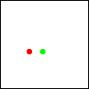 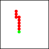 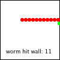
Figure 48 displays a sequence of screen shots that illustrates how the game works in practice. On the left, you see the initial setting. The worm consists of a single red segment, its head. It is moving toward the food, which is displayed as a green disk. The screen shot in the center shows a situation when the worm is about to eat some food. In the right-most screen shot the worm has run into the right wall. The game is over; the player scored 11 points.
The following exercises guide you through the design and implementation of a
Worm game. Like Structures In Lists, these exercises illustrate how to tackle a
non-trivial problem via iterative refinement. That is, you don’t design the
entire interactive program all at once but in several stages, called
iterations. Each iteration adds details and refines the
program—
Exercise 181. Design an interactive GUI program that continually moves a one-segment worm and enables a player to control the movement of the worm with the four cardinal arrow keys. Your program should use a red disk to render the one-and-only segment of the worm. For each clock tick, the worm should move diameter.
Hints: (1) Re-read section Designing World Programs to recall how to design world programs. When you define the worm-main function, use the rate at which the clock ticks as its argument. See the documentation for on-tick on how to describe the rate. (2) When you develop a data representation for the worm, contemplate the use of two different kinds of representations: a physical representation and a logical one. The physical representation keeps track of the actual physical position of the worm on the screen; the logical one counts how many (widths of) segments the worm is from the left and the top. For which of the two is it easier to change the physical appearances (size of worm segment, size of game box) of the “game?”
Exercise 182. Modify your program from exercise exercise 181 so that it stops if the worm has run into the walls of the world. When the program stops because of this condition, it should render the final scene with the text "worm hit border" in the lower left of the world scene. Hint: You can use the stop-when clause in big-bang to render the last world in a special way. Challenge: Show the worm in this last scene as if it were on its way out of the box.
Exercise 183. Develop a data representation for worms with tails. A worm’s tail is a possibly empty sequence of “connected” segments. Here “connected” means that the coordinates of a segment differ from those of its predecessor in at most one direction and, if rendered, the two segments touch. To keep things simple, treat all segments—
head and tail segments— the same. Then modify your program from exercise 181 to accommodate a multi-segment worm. Keep things simple: (1) your program may render all worm segments as red disks; (2) one way to think of the worm’s movement is to add a segment in the direction in which it is moving and to delete the last segment; and (3) ignore that the worm may run into the wall or into itself.
Exercise 184. Re-design your program from exercise exercise 183 so that it stops if the worm has run into the walls of the world or into itself. Display a message like the one in exercise 182 to explain whether the program stopped because the worm hit the wall or because it ran into itself.
Hint: To determine whether a worm is going to run into itself, check whether the position of the head would coincide with one of its old tail segments if it moved. Hint: Read up on the BSL+ primitive member?.
Exercise 185. Equip your program from exercise 184 with food. At any point in time, the box should contain one piece of food. To keep things simple, a piece of food is of the same size as worm segment. When the worm’s head is located at the same position as the food, the worm eats the food, meaning the worm’s tail is extended by one segment. As the piece of food is eaten, another one shows up at a different location.
Adding food to the game requires changes to the data representation of world states. In addition to the worm, the states now also include a representation of the food, especially its current location. A change to the game representation suggests new functions for dealing with events, though these functions can reuse the functions for the worm (from exercise 184) and their test cases. It also means that the tick handler must not only move the worm; in addition it must manage the eating process and the creation of new food.
Your program should place the food randomly within the box. To do so properly, you need a design technique that you haven’t seen before—so-called generative recursion— so we provide function definitions:For the workings of random, read the manual or exercise 89.
; Posn -> Posn ; ??? (define (food-create p) (food-check-create p (make-posn (random MAX) (random MAX)))) ; Posn Posn -> Posn ; generative recursion ; ??? (define (food-check-create p candidate) (if (equal? p candidate) (food-create p) candidate)) Before you use them, however, fill in the purpose statements and explain how they work, assuming MAX is greater than 1.Hints: (1) One way to interpret “eating” is to say that the head moves where the food used to be located and the tail grows by one segment, inserted where the head used to be. Why is this interpretation easy to design as a function? (2) We found it useful to add a second parameter to the worm-main function for this last step, namely, a Boolean that determines whether big-bang displays the current state of the world in a separate window; see the documentation for state on how to ask for this information.
Once you have finished this last exercise, you now have a finished worm game. If you modify your worm-main function so that it returns the length of the final worm’s tail, you can use the “Create Executable” menu in DrRacket to turn your program into something that anybody can launch, not just someone that knows about BSL+ and programming.
You may also wish to add extra twists to the game, to make it really your game. We experimented with funny end-of-game messages; having several different pieces of food around; with extra obstacles in the room; and a few other ideas. What can you think of?
13.3 Simple Tetris
Tetris is another game from the early days of software. Since the design of a full-fledged Tetris game demands a lot of labor with only marginal profit, this section focuses on a simplified version. If you feel ambitious, look up how Tetris really works and design a full-fledged version.
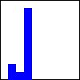 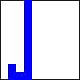
In our simplified version, the game starts with individual blocks dropping from the top of the scene. Once it lands on the ground, it comes to a rest and another block starts dropping down from some random place. A player can control the dropping block with the “left” and “right” arrow keys. Once a block lands on the floor of the canvas or on top of some already resting block, it comes to rest and becomes immovable. In a short time, the blocks stack up and, if a stack of blocks reaches the ceiling of the canvas, the game is over. Naturally the objective of this game is to land as many blocks as possible. See figure 49 for an illustration of the idea.
- The width and the height of the game are fixed as are the blocks. In terms of BSL+, you want definitions like these:
; physical constants (define WIDTH 10) ; the maximal number of blocks horizontally ; graphical constants (define SIZE 10) ; blocks are square (define BLOCK ; they are rendered as red squares with black rims (overlay (rectangle (- SIZE 1) (- SIZE 1) "solid" "red") (rectangle SIZE SIZE "outline" "black"))) (define SCENE-SIZE (* WIDTH SIZE)) Explain the last line before you read on. The “landscape” of resting blocks and the moving block differ from game to game and from clock tick to clock tick. Let us make this more precise. The appearances of the blocks remains the same; their positions differ.
We are now left with the central problem of designing a data representation for the dropping blocks and the landscapes of blocks on the ground. When it comes to the dropping block, there are againSee exercise 181 for a related design decision. two possibilities: one is to choose a “physical” representation, another would be a “logical” one. The physical representation keeps track of the actual physical position of the blocks on the screen; the logical one counts how many block widths a block is from the left and the top. When it comes to the resting blocks, there are even more choices than for individual blocks: a list of physical positions, a list of logical positions, a list of stack heights, etc.
; A Tetris is (make-tetris Block Landscape) ; A Landscape is one of: ; – empty ; – (cons Block Landscape) ; Block is (make-block N N) ; interpretation: given (make-tetris (make-block x y) (list b1 b2 ...)) ; (x,y) is the logical position of the dropping block, while ; b1, b2, etc are the positions of the resting blocks ; a logical position (x,y) determines how many SIZEs the block is ; from the left— x— and from the top— x.
Exercise 186. When you are presented with a complex data definition—like the one for the state of a Tetris game— you start by creating instances of the various data collections. Here are some suggestive names for examples you can later use for functional examples:
(define landscape0 ...) (define block-dropping ...) (define tetris0 ...) (define tetris0-drop ...) ... (define block-landed (make-block 0 (- HEIGHT 1))) ... (define block-on-block (make-block 0 (- HEIGHT 2))) Design the program tetris-render, which turns a given instance of Tetris into an Image. Use DrRacket’s interaction area to develop the expression that renders some of your (extremely) simple data examples. Then formulate the functional examples as unit tests and the function itself.
Exercise 187. Design the interactive program tetris-main, which displays blocks dropping in a straight line from the top of the canvas and landing on the floor or on blocks that are already resting. The input to tetris-main should determine the rate at which the clock ticks. See the documentation of on-tick for how to specify the rate.
To discover whether a block landed, we suggest you drop it and check whether it is on the floor or it overlaps with one of the blocks on the list of resting block. Hint: Read up on the BSL+ primitive member?.
When a block lands, your program should immediately create another block that descends on the column to the right of the current one. If the current block is already in the right-most column, the next block should use the left-most one. Alternatively, define the function block-generate, which randomly selects a column different from the current one; see exercise 185 for inspiration.
Exercise 188. Modify the program from exercise 187 so that a player can control the left or right movement of the dropping block. Each time the player presses the "left" arrow key, the dropping block should shift one column to the left unless it is in column 0 or there is already a stack of resting blocks to its left. Similarly, each time the player presses the "right" arrow key, the dropping block should move one column to the right if possible.
Exercise 189. Equip the program from exercise 188 with a stop-when clause. The game ends when one of the columns contains HEIGHT blocks.
It turns out that the design of the stop-when handler is complex. So here are hints: (1) Design a function that consumes a natural number i and creates a column of i blocks. Use the function to define a Landscape for which the game should stop. (2) Design a function that consumes a Landscape and a natural number x0. The function should produce the list of blocks that have the x coordinate x0. (3) Finally, design a function that determines whether the length of any column in some given Landscape is HEIGHT.
Once you have solve exercise 189 you have a bare-bones Tetris game. You may wish to polish it a bit before you show it to your friends. For example, the final screen could show a text that says how many blocks the player was able to stack up. Or every screen could contain such a text. The choice is yours.
13.4 Full Space War
Structure In the World and Itemizations and Structures introduced a simplistic space invader game. It is simplistic because there is little interaction between the ground force and the UFO. Lists And World adds one interesting twist: the player capability to fire as many shots as desired.
The final exercise in this chapter is to design a full-fledged space invader game. As always, a UFO is trying to land on earth. The player’s task is to prevent the UFO from landing. To this end, the game comes with a tank that may fire an arbitrary number of shots. When one of these shots comes close enough to the UFO’s center of gravity, the game is over and the player won. If the UFO comes close enough to the ground, the player lost.
Use the lessons learned from the preceding two sections and design the game slowly, adding one game feature after another. Always use the design recipe and rely on the design guidelines for auxiliary functions. If you like the game, add other features: show a running text; equip the UFO with charges that can harm or eliminate the tank; create an entire fleet of attacking UFOs; and above all, use your imagination.
If you don’t like UFOs and tanks shooting at each other, design an alternative game that has the same organization as the space invader game. Here is one example. You are an airplane flying fire fighter, stationed in the West during the summer and your task is to extinguish fires. And indeed, fires break out everywhere. As the fires grow, they damage the surrounding forests, farms, and towns. You get into your airplane and you drop water charges on these fires to limit the damage. Use an iterative design approach as illustrated in this chapter to create this game.
13.5 Finite State Machines
Finite state machines (FSMs) and regular expressions are ubiquitous elements of programming problems. As A Bit More About Worlds explains, state machines are one possible way to understand and even design world programs. Conversely, exercise 100 shows how to design FSM world programs that determine whether a series of key strokes matches a regular expression.
a (b|c)* d
As mentioned every regular expressions corresponds to an FSM, which means that we can focus on designing FSM-consuming programs. Furthermore, we ignore the actual key stroke and have the world transition according to the given FSM for every key stroke. Concerning the imagery, we use FSMs with states that specify colors as string and we display these states as colored squares.
; FSM-State is a String that specifies a color.
Exercise 190. Design the equality predicate state=?; see Input Errors.
(define-struct transition (current next)) ; A Transition is ; (make-transition FSM-State FSM-State)
; A Transition* is ; – empty ; – (cons Transition Transition*)
(define-struct fsm (current transitions)) ; A FSM is (make-fsm FSM-State Transition*)
(define t0 (list (make-transition "red" "green") (make-transition "green" "yellow") (make-transition "yellow" "red")))
(define fsm0 (make-fsm "red" t0))
Exercise 191. The BW Machine is an FSM that flips from black to white and back to black for every key event. Formulate an appropriate transition table and complete FSM.
Now that we have formulated a data definition for the central element of our problem statement, we can follow to the design recipe for world programs. It tells us to differentiate between things that change and things that remain the same over the course of a program evaluation. Given that the main function consumes an instance of FSM, we can ask which parts of this piece of data changes over time and which one is constant. The answer is in the problem statement and says that the FSM’s current state changes for every key stroke; by implication, the transition table stays the same.
; A SimulationS.v1 is an FSM-State.
; SimulationS.v1 -> Image ; render a world state as an image (define (render-state.v1 s) (square 100 "solid" s)) ; SimulationS.v1 -> Image ; given a key stroke ke and current state cs, find the next state (define (find-next-state.v1 cs ke) cs)
; FSM -> State ; interpret the given finite state machine (define (simulate.v1 fsm0) (big-bang (fsm-current fsm0) [to-draw render-state.v1] [on-key find-next-state.v1]))
The next part of the book resolves this conundrum with the introduction of ISL (and ISL+), an extension of the BSL+ programming language. It introduces two new, related linguistic constructs and by using these constructs, the problem disappears. See ... Add Expressive Power.
; A SimulationS is an FSM.
; FSM -> Image ; render current world state as a colored square (check-expect (state-as-colored-square fsm0) (square 100 "solid" "red")) (define (state-as-colored-square fsm) (square 100 "solid" (fsm-current fsm))) ; FSM KeyEvent -> FSM ; create an FSM that contains the next state, given that a key ; event took place (define (find-next-state fsm current) fsm)
; FSM -> State ; interpret a given FSM, reacting to each key event with a transition (define (simulate fsm0) (big-bang fsm0 [to-draw state-as-colored-square] [on-key find-next-state]))
(check-expect (find-next-state fsm0 "n") (make-fsm "green" t0)) (check-expect (find-next-state fsm0 "q") (make-fsm "green" t0)) (check-expect (find-next-state fsm0 "y") (make-fsm "green" t0))
(define (find-next-state fsm key-event) (make-fsm ... (fsm-transitions fsm) ... (fsm-current fsm) ...))
(define (find-next-state fsm key-event) (make-fsm (find (fsm-transitions fsm) (fsm-current fsm)) (fsm-transitions fsm)))
; Transition* FSM-State -> FSM-State ; find the state matching current in the transition table (check-expect (find t0 "red") "green") (define (find transitions current) current)
Exercise 192. Complete the design of find. Simulate the traffic FSM specified in fsm0. Also use the complete program to run the BW Machine from exercise 191.
Exercise 193. Our simulation program is quite restrictive. In particular, you cannot use it to represent finite state machines that transition from one state to another when a user presses a specific key event. Revamp the data definition for Transition so that it also specifies the key for which the FSM transitions from one state to the next. Once you have the revised data definition, modify the code so that simulate can deal with these generalized data representations of FSMs.
14 Summary
This second part of the book is about the design of programs that deal with arbitrarily large data. As you can easily imagine, software is particularly useful when it is used on information that comes without pre-specified size limits, meaning “arbitrarily large data” is a critical step on your way to becoming a real programmer. In this spirit, we suggest that you take away three lessons from this part:
It refines the design recipe so that you can deal with self-references and cross-references in data definitions. The occurrence of the former calls for recursive functions, and the occurrence of the latter calls for the use of an auxiliary function and an appropriate call in the main function’s body.
Complex problems call for a decomposition into separate problems and designing a function to solve each of these tasks. The solution to the overall problem is then a function composition. This decomposition-composition design is especially called for when the problem statement implicitly of explicitly mentions auxiliary tasks; when the definition step for a function calls for a traversal of a large or arbitrarily large piece of data; and when a general task is somewhat easier to solve than the specific one in a problem statement.
Pragmatics really matter for program design. Make sure to understand the various clauses you can use in a big-bang description to describe the workings of your “world” programs.
While this part mostly focuses on lists as a good example of arbitrarily
large data—